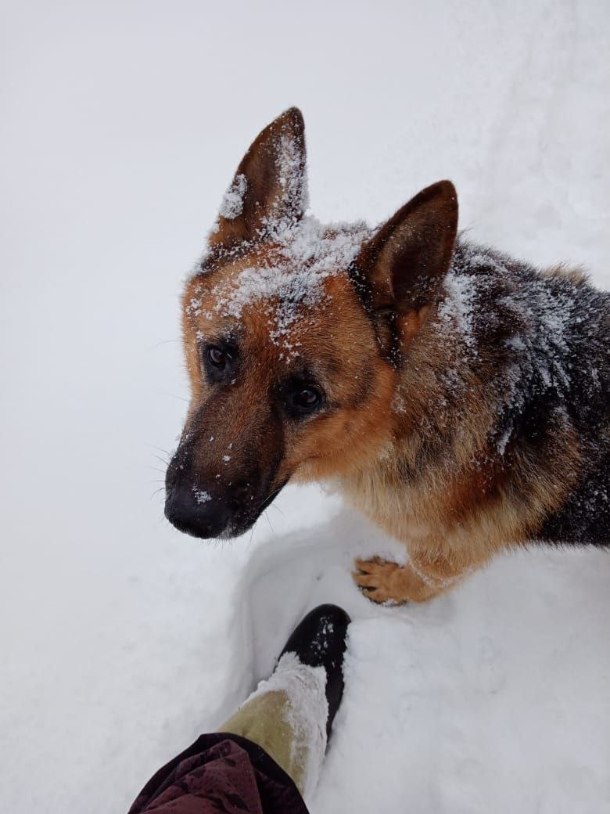

Факт 1: Порода-актер
Немецкие овчарки — настоящие звезды Голливуда. Самая известная из них — Рин Тин Тин, который был спасен с поля боя Первой мировой войны американским солдатом. Он снялся в 26 фильмах и настолько был популярен, что получал тысячи писем от поклонников и даже "подписывал" контракты лапой.
Факт 2: Уникальный нос
Обоняние немецкой овчарки — это ее суперсила. В носу у них находится около 225 миллионов рецепторов (для сравнения, у человека лишь 5 миллионов). Это позволяет им не только идеально работать по следу, но и диагностировать некоторые заболевания у людей, включая рак и колебания уровня сахара в крови.

Факт 3: Почти «космонавт»
До того, как Юрий Гагарин полетел в космос, советская космическая программа отправляла туда собак. И одной из кандидаток была немецкая овчарка по кличке Звездочка. В итоге полетела ее «напарница» — дворняжка Звездочка, но сам факт говорит о высоком доверии к интеллекту и выносливости породы.
Факт 4: Двухслойная шуба
Их знаменитая шерсть состоит из двух слоев. Верхний, более жесткий, отталкивает воду и грязь, а густой подшерсток отлично сохраняет тепло. Именно благодаря такой "системе отопления" они могут работать в самых суровых погодных условиях, от жаркого лета до морозной зимы.
Факт 5: Интеллект — их второе имя
Согласно рейтингу собачьего интеллекта Стенли Корена, немецкие овчарки занимают почетное 3-е место. Они способны понять новую команду всего за 5 повторений и выполняют ее с первого раза в 95% случаев. Это не просто дрессировка, это настоящее сотрудничество с человеком.